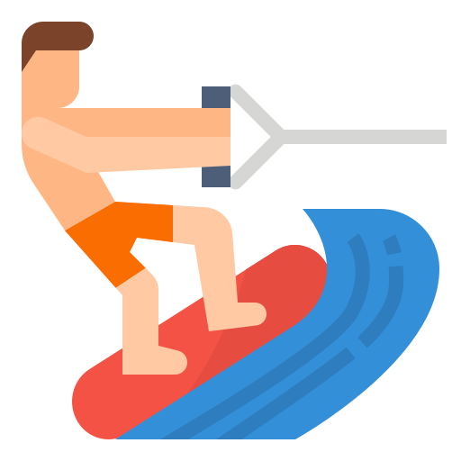

Grenaa Strand
Aktivitet

Strande

Danmarks næstbedste strand!
Stranden ligger syd for Grenaa Havn og er egentlig to strande, adskilt af Polderrevet, som er et meget velbesøgt fiskested med hornfisk og ørreder. Stranden, nærmest havnen, ligger med sommerhuse i klitten og er meget børnevenlig med lav vanddybde og det fineste sand. Sommeren igennem kan man bruge beachvolleybanen og deltage i mange aktiviteter. Se kort udsnit og flere oplysninger her.